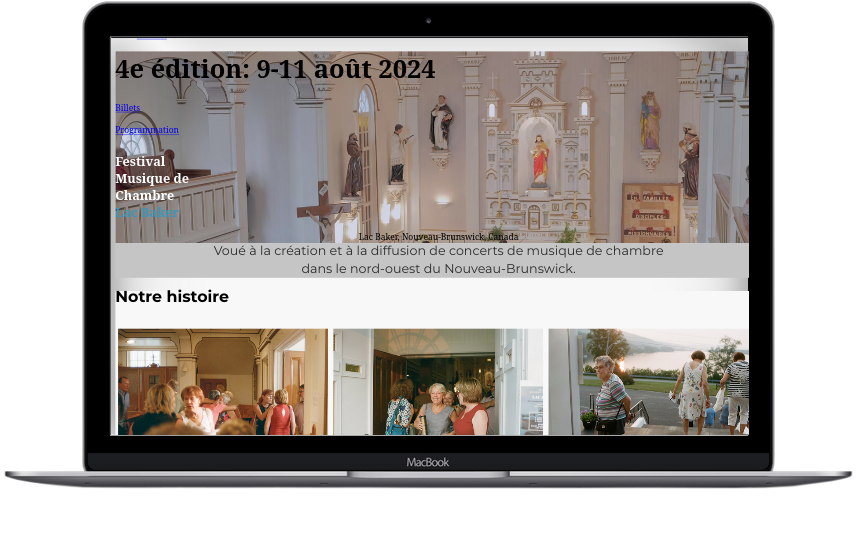
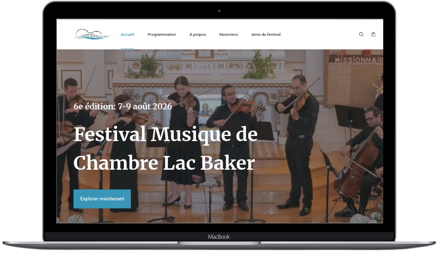
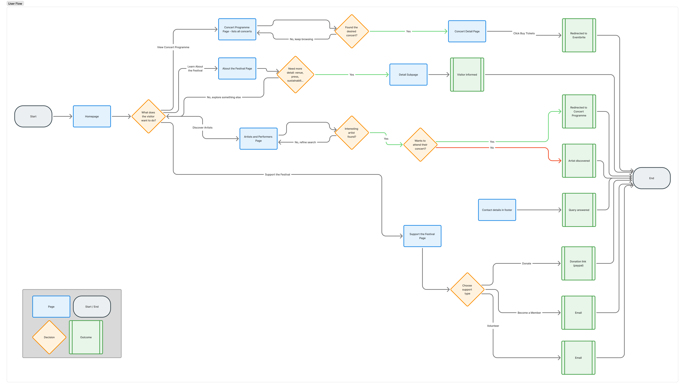

Music Festival Website Redesign
Redesigning and rebuilding a community music festival website in WordPress to improve navigation, mobile usability, content management, and the overall visitor experience while giving organizers a site that is easier to maintain year after year.
Project Overview
The Challenge
The festival's existing website had been built over several years and no longer reflected the festival's identity. Visitors struggled to quickly find practical information, while organizers found the website increasingly difficult to update before each edition of the festival.
Key challenges included:
- Outdated visual design that no longer represented the festival's identity
- Confusing navigation across multiple pages
- Poor mobile browsing experience during the event
- Difficult content management for organizers
- Inconsistent layouts and information hierarchy
The existing Weebly website also limited future growth, making it difficult to introduce new content, improve performance, and maintain a consistent design across the site.
Before
After


How might we redesign the festival website to help visitors quickly find essential information while making it simple for organizers to update content every year?
The Solution
I redesigned the website using a user-centred approach before rebuilding it in WordPress with Elementor. The new website prioritises clear navigation, responsive layouts, and a flexible content structure that allows organizers to easily update artists, schedules, sponsors, news, and practical information without requiring technical knowledge.
The redesign also established a more cohesive visual identity, improved readability across devices, and created a scalable foundation for future editions of the festival.
Design Process
The project followed a user-centred design process:

FigJam User FlowUnderstanding the Problem
Before creating wireframes, I evaluated the existing website and identified the primary usability challenges affecting both festival visitors and organizers. These observations helped prioritise the redesign and guided the decisions made throughout the project.
Visitors struggled to quickly find essential information.
Potential impact: Users spent unnecessary time searching for concert schedules, ticket information, and practical details, increasing the likelihood that they would leave the website before planning their visit.
The visual design no longer reflected the quality of the festival.
Potential impact: An outdated interface failed to communicate the professionalism and artistic excellence of the event, reducing visitors' confidence and first impression.
Updating the website each year required unnecessary effort.
Potential impact: Organizers relied on repetitive manual edits, making it more difficult to publish new concert programmes, artist biographies, news, and festival information efficiently.
Competitive Analysis
I analysed several music festival and performing arts websites to understand how they present programmes, artists, ticketing, and visitor information. The objective was to identify common UX patterns while finding opportunities to create a more intuitive and memorable experience for the Festival de musique de chambre du Lac Baker.
Norfolk Chamber Music FestivalCorbridge Chamber Music Festival
Domaine Forget
La Musikfest Parisienne
Finding 1 — Successful festival websites prioritise the programme.
The strongest examples placed concerts, schedules, and ticket access at the centre of the experience, allowing visitors to immediately understand what is happening and when.
Finding 2 — Strong storytelling builds trust and identity.
Leading festival websites combined practical information with photography, artist profiles, and the festival's story to create an emotional connection before visitors purchased tickets or planned their trip.
Opportunity: Create a website that balances practical visitor information with the artistic identity of the festival, making it easy to discover concerts while communicating the unique atmosphere that makes the Festival de musique de chambre du Lac Baker special.
User Research
To better understand the needs of both festival visitors and organizers, I conducted five semi-structured interviews lasting approximately twenty minutes each. Participants were asked about how they typically discovered festival information, planned their visit, and interacted with the website before and during the event.
Recruitment criteria
- Previous festival attendees
- Festival organizers and volunteers responsible for website updates
- Musicians who had previously performed at the festival
| ID | Profile | Experience |
|---|---|---|
| P1 | Festival attendee | Attended multiple editions of the festival |
| P2 | First-time visitor | Interested in planning a future visit |
| P3 | Festival volunteer | Assists visitors during the event |
| P4 | Festival organizer | Updates website content each season |
| P5 | Performing musician | Participated in previous editions |
Research Insights
Visitors want immediate access to practical information.
Participants consistently expected to find the concert programme, dates, location, and ticket information within the first few seconds of visiting the website.
"The first thing I look for is what's happening and when."
Design opportunity: Prioritise the programme, calls-to-action, and key visitor information on the homepage.
The website should reflect the festival's artistic identity.
Visitors associated the festival with high-quality performances and an intimate atmosphere, but felt the previous website did not communicate that experience.
"The festival feels beautiful in person—the website should feel the same."
Design opportunity: Use photography, typography, and whitespace to reinforce the festival's premium and welcoming identity.
Organizers need a website that's easy to maintain.
Each new edition requires updating artists, concerts, sponsors, and announcements. Repeating the same work every year was time-consuming and increased the risk of inconsistent content.
"Updating everything every summer should be simple, not stressful."
Design opportunity: Create reusable page layouts and a clear content structure that simplifies annual updates.
Many visitors browse on mobile devices.
Participants often checked the website while travelling or during the festival, making readability and responsive layouts essential.
"I'm usually looking things up on my phone while I'm already on my way."
Design opportunity: Adopt a mobile-first approach with clear navigation, large touch targets, and responsive layouts.
Research-Based Personas
The research identified three primary user groups with different goals. These personas helped prioritise content, navigation, and content management throughout the redesign.
"I just want to quickly see what's on and plan my weekend."
Goals
- Browse the concert programme
- Purchase tickets easily
- Plan a visit with friends and family
Pain Points
- Important information is difficult to find
- Navigation feels confusing
- Too much scrolling before reaching the programme
Needs
- Clear navigation
- Easy access to concerts and tickets
- Mobile-friendly browsing
"I've never been before—I want to know what makes this festival special."
Goals
- Learn about the festival
- Discover the featured artists
- Decide whether the festival is worth travelling for
Pain Points
- Limited context about the event
- Difficult to understand the overall experience
- Practical visitor information isn't obvious
Needs
- Inspiring photography
- Clear festival information
- Simple visitor guide
"Every summer I need to update artists, concerts, and announcements without rebuilding the website."
Goals
- Update content quickly
- Keep branding consistent
- Publish each year's programme efficiently
Pain Points
- Repetitive manual updates
- Inconsistent page layouts
- Time-consuming content management
Needs
- Reusable page templates
- Simple WordPress editing
- Flexible content structure
Ideation & Design Exploration
Based on the research findings, I explored several approaches to simplify navigation, improve content hierarchy, and better communicate the festival's identity before developing the final design.
Challenge 1 — How might visitors quickly find the information they're looking for?
Single long homepage
Rejected
Important information becomes difficult to locate as the page grows each year.
Complex multi-level navigation
Rejected
Introduces unnecessary complexity for a relatively small website.
Simple task-based navigation
Selected
Organises content around what visitors want to accomplish: discover concerts, learn about the festival, and plan their visit.
Challenge 2 — How might the website communicate the festival's atmosphere?
Text-heavy pages
Rejected
Failed to capture the emotion and intimacy of the festival.
Large decorative visuals
Rejected
Created visual impact but distracted from important visitor information.
Balanced storytelling
Selected
Combines photography, whitespace, and concise content to showcase both the festival experience and practical information.
Information Architecture
I reorganised the website around the visitor journey so that users could move naturally from discovering the festival to planning their visit.
Key Design Decisions
Clear Homepage Hierarchy

Problem: Visitors struggled to identify the festival dates, concert programme, and primary calls-to-action.
Solution: A simplified hero section immediately highlights the festival dates, key actions, and upcoming programme while introducing the festival's identity.
Impact: Users can understand the purpose of the website within seconds.
Improved Content Structure
Problem: Important information was scattered across multiple pages with inconsistent layouts.
Solution: Content was reorganised into clear sections with a consistent visual hierarchy and reusable page templates.
Impact: Visitors locate information faster while organizers benefit from simpler annual updates.
Responsive Mobile Experience
Problem: Many visitors accessed the website on mobile devices, particularly while travelling or attending the festival.
Solution: Mobile-first layouts, simplified navigation, responsive typography, and larger touch targets improve usability across devices.
Trade-off: Decorative elements were reduced on smaller screens to prioritise readability and performance.
Usability Testing
The redesigned interface was reviewed through informal usability sessions to validate the navigation, content hierarchy, and overall visitor experience.
Task 1 — Find the concert programme
Observation: Participants immediately looked for the programme from the homepage and expected it to be accessible with a single click.
Iteration: The programme was given greater visual prominence through the navigation and homepage call-to-action.
Task 2 — Learn about the festival
Observation: Users wanted to quickly understand what makes the festival unique before exploring the programme.
Iteration: The homepage was updated to better communicate the festival's story through concise copy, imagery, and clear section hierarchy.
Task 3 — Find practical visitor information
Observation: Participants searched for contact details, location, and visitor information near the end of their journey.
Iteration: Contact information and practical details were made more prominent throughout the site and reinforced in the footer.
Testing confirmed that simplifying the navigation and strengthening the visual hierarchy made it easier for visitors to discover concerts, understand the festival, and plan their visit with confidence.
Accessibility Considerations
Colour & Contrast
Colours were selected to provide sufficient contrast for readable text while preserving the festival's elegant visual identity.
Typography
A clear typographic hierarchy, generous spacing, and consistent heading structure improve readability across all pages.
Keyboard & Navigation
Interactive elements use descriptive labels, visible focus states, and appropriately sized touch targets to improve accessibility.
Responsive Experience
The interface was designed to adapt smoothly across desktop, tablet, and mobile devices, ensuring visitors can easily access festival information wherever they are.
Technical Considerations
Although the project focused on improving the user experience, implementation decisions were made with long-term maintainability in mind so the website could be updated easily for future festival editions.
WordPress Content Management
The website was rebuilt in WordPress using Elementor, allowing organizers to edit pages, update concert programmes, publish news, and manage content without requiring technical knowledge.
Reusable Components
Reusable layouts and consistent styling reduce repetitive work while maintaining a cohesive visual identity across the website.
Responsive Performance
The website was developed using responsive layouts, optimized images, and lightweight custom CSS to provide a consistent experience across desktop, tablet, and mobile devices.
Reflection
This project demonstrated that effective UX is about more than creating an attractive interface. By understanding the needs of both visitors and organizers, I was able to redesign the website around clear navigation, meaningful content hierarchy, and a maintainable content management system.
One of the most valuable lessons was balancing aesthetics with usability. As a cultural website, the design needed to communicate the elegance and atmosphere of the festival while ensuring visitors could quickly find practical information such as concerts, tickets, and contact details.
Working directly in WordPress also strengthened my understanding of designing interfaces that are not only enjoyable for visitors but also practical for non-technical administrators who will manage the website year after year.